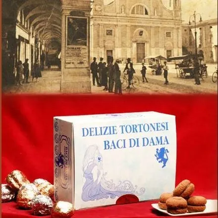
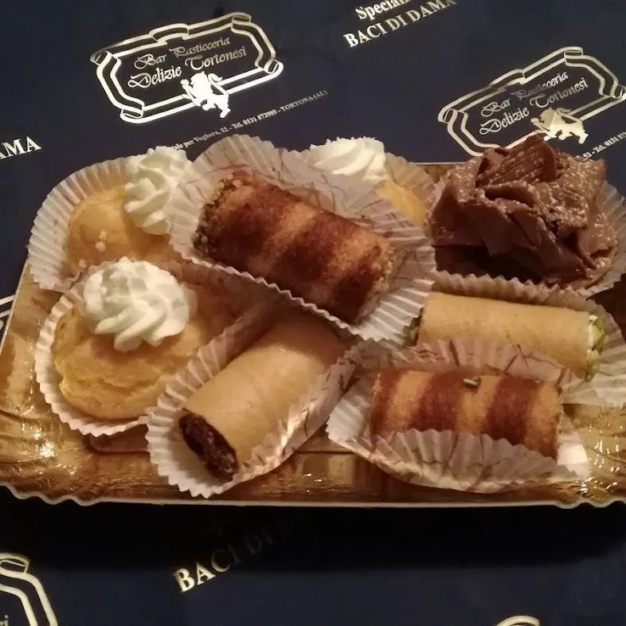
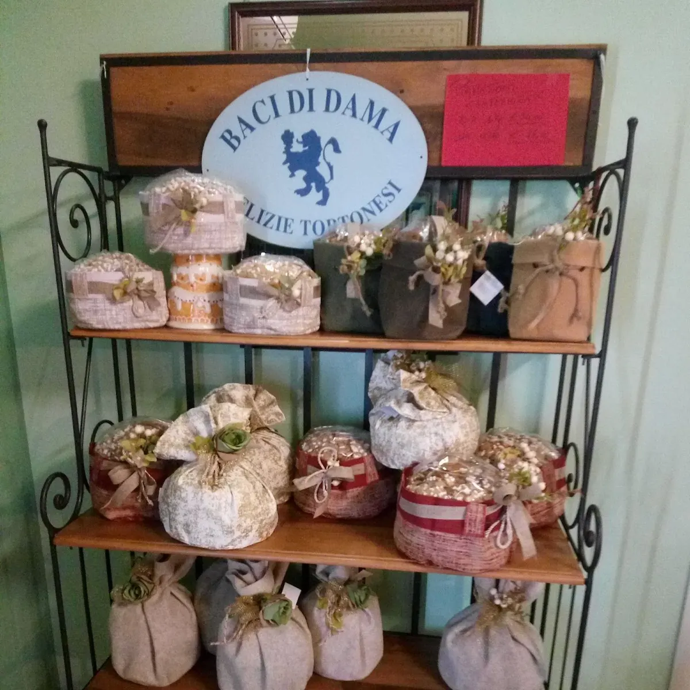
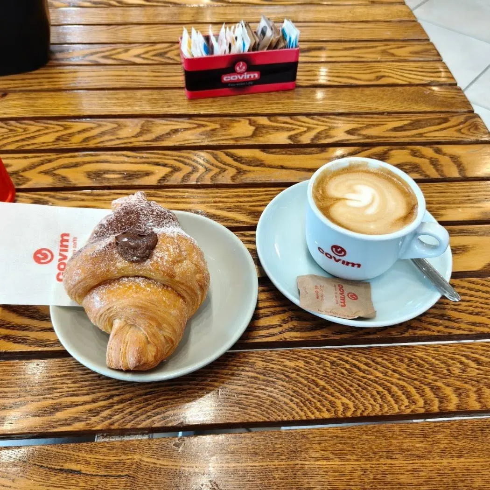
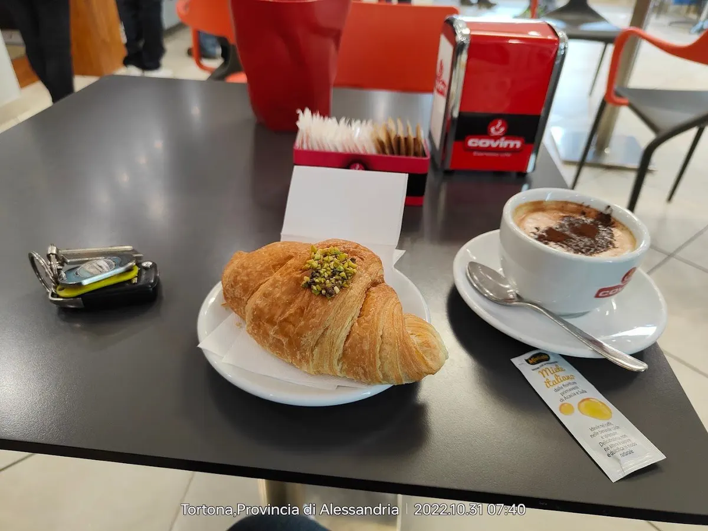
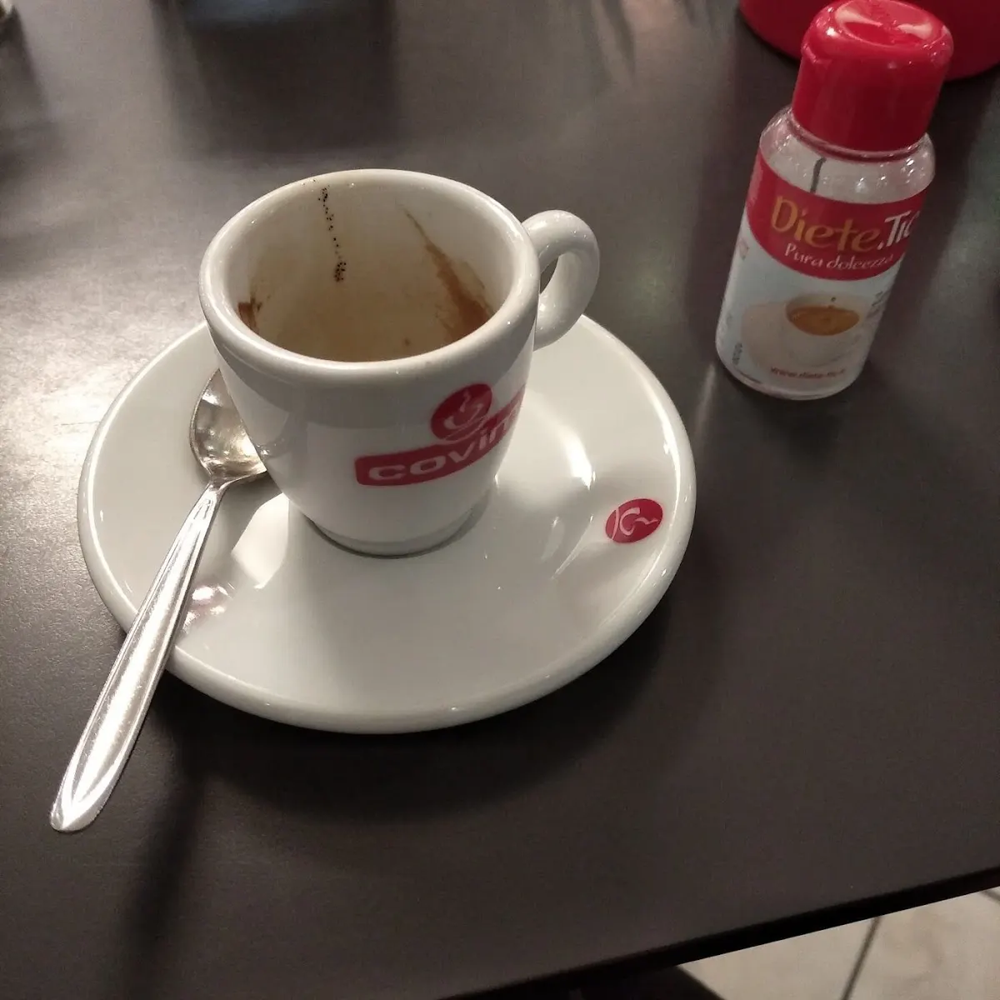

Baci di Dama
Nella loro scatola azzurra: da regalare, o da portarsi a casa.
Sito dimostrativo
 Chiama
Chiama

Nella loro scatola azzurra: da regalare, o da portarsi a casa.

Cannoncini, bignè e paste per il vassoio della domenica.

Panettoni e colombe confezionati a mano, quando è stagione.

Brioche farcite e cappuccino, dalle cinque del mattino.
Per chi parte presto, per chi smonta dal turno, per chi vuole la brioche appena fatta: il banco è pronto alle cinque del mattino, dal martedì alla domenica.

